Using koloRo palettes with ggplot2
Source:vignettes/ggplot2-integration.Rmd
ggplot2-integration.RmdOverview
koloRo provides seamless integration with ggplot2 through dedicated scale functions. These functions allow you to use any of the 250+ koloRo palettes directly in your ggplot2 visualizations.
Scale functions
koloRo provides the following ggplot2 scale functions:
| Function | Type | Use case |
|---|---|---|
scale_color_koloro() |
Discrete | Categorical data (points, lines) |
scale_fill_koloro() |
Discrete | Categorical data (bars, areas) |
scale_color_koloro_c() |
Continuous | Numeric data (gradients) |
scale_fill_koloro_c() |
Continuous | Numeric data (heatmaps) |
scale_color_koloro_div() |
Diverging | Data with meaningful midpoint |
scale_fill_koloro_div() |
Diverging | Data with meaningful midpoint |
scale_color_koloro_binned() |
Binned | Stepped color gradients |
scale_fill_koloro_binned() |
Binned | Stepped color gradients |
Note: British spelling alternatives
(scale_colour_*) are also available.
Discrete scales
Basic usage
library(ggplot2)
# Default: uses Okabe-Ito colorblind-safe palette
ggplot(mtcars, aes(x = wt, y = mpg, color = factor(cyl))) +
geom_point(size = 3) +
scale_color_koloro() +
labs(title = "Default discrete scale (Okabe-Ito)")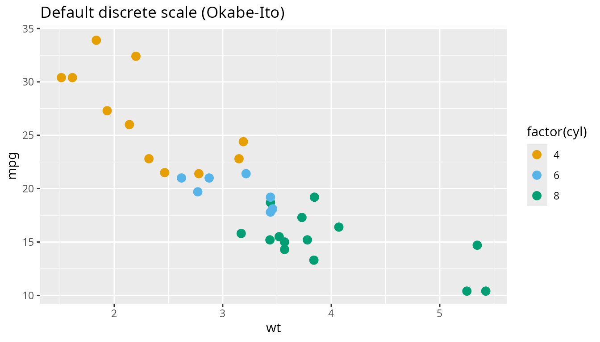
Specifying a palette
# Use Paul Tol bright palette
ggplot(mtcars, aes(x = wt, y = mpg, color = factor(cyl))) +
geom_point(size = 3) +
scale_color_koloro("tol_bright") +
labs(title = "Tol bright palette")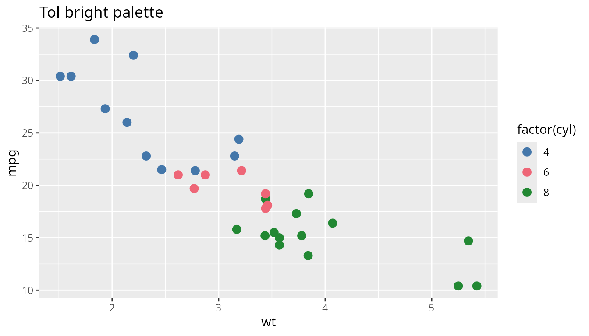
# Use Alhambra palette
ggplot(mtcars, aes(x = wt, y = mpg, color = factor(cyl))) +
geom_point(size = 3) +
scale_color_koloro("alhambra_nazari") +
labs(title = "Alhambra Nazari palette")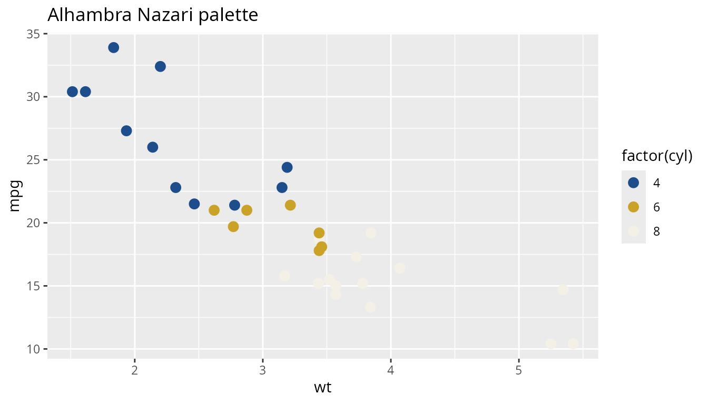
Fill scales for bar charts
ggplot(mtcars, aes(x = factor(cyl), fill = factor(cyl))) +
geom_bar() +
scale_fill_koloro("wong") +
labs(title = "Bar chart with Wong palette")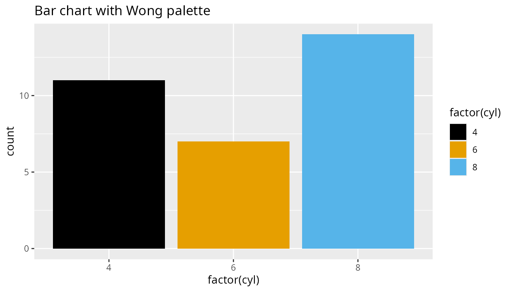
Reversing color order
# Reverse the palette direction
ggplot(mtcars, aes(x = wt, y = mpg, color = factor(cyl))) +
geom_point(size = 3) +
scale_color_koloro("viridis", direction = -1) +
labs(title = "Reversed color order")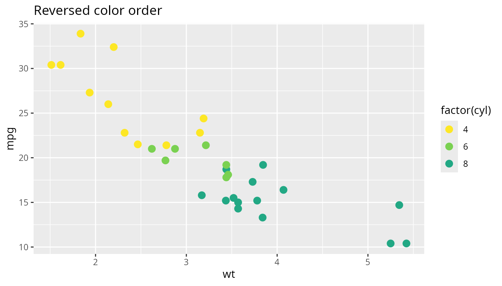
Continuous scales
Basic continuous gradient
# Using viridis (default)
ggplot(mtcars, aes(x = wt, y = mpg, color = hp)) +
geom_point(size = 3) +
scale_color_koloro_c() +
labs(title = "Continuous scale (Viridis)")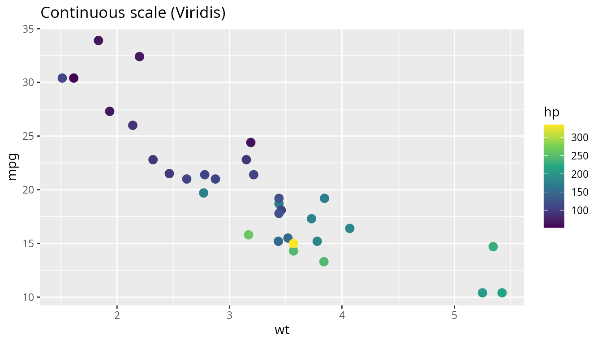
# Using plasma
ggplot(mtcars, aes(x = wt, y = mpg, color = hp)) +
geom_point(size = 3) +
scale_color_koloro_c("plasma") +
labs(title = "Continuous scale (Plasma)")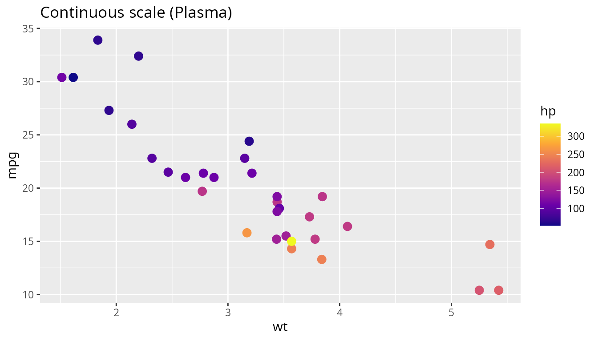
Heatmaps with continuous fill
# Heatmap with batlow palette
ggplot(faithfuld, aes(waiting, eruptions, fill = density)) +
geom_tile() +
scale_fill_koloro_c("batlow") +
labs(title = "Heatmap with Batlow palette")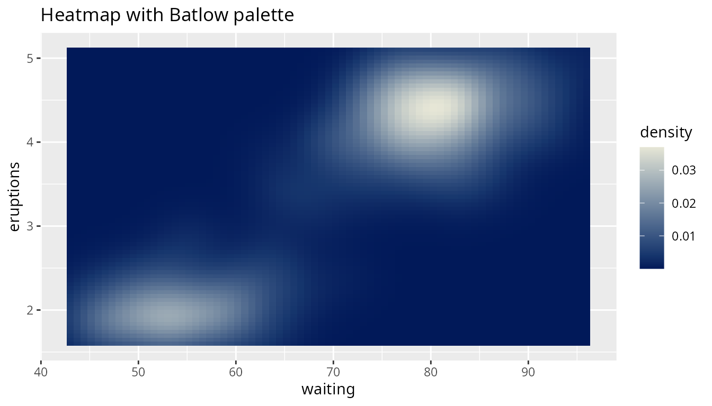
# Heatmap with magma
ggplot(faithfuld, aes(waiting, eruptions, fill = density)) +
geom_tile() +
scale_fill_koloro_c("magma") +
labs(title = "Heatmap with Magma palette")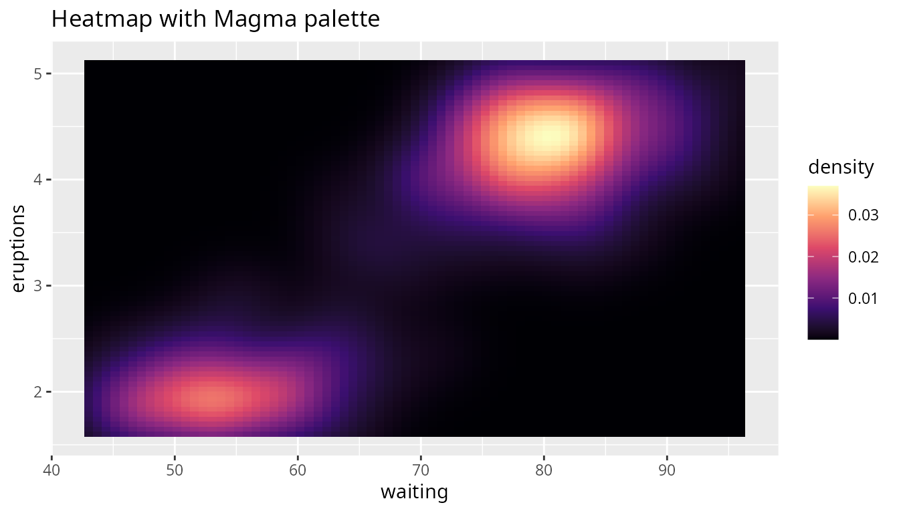
Diverging scales
Diverging scales are ideal for data with a meaningful midpoint (e.g., zero, average, threshold).
Basic diverging scale
# Create sample data with positive and negative values
set.seed(42)
df <- data.frame(
x = 1:100,
y = rnorm(100)
)
# Default diverging scale (vik palette, midpoint = 0)
ggplot(df, aes(x, y, color = y)) +
geom_point(size = 3) +
scale_color_koloro_div() +
labs(title = "Diverging scale (Vik palette)")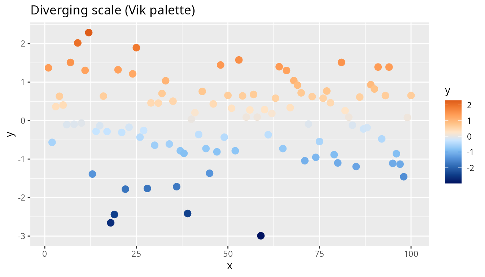
Custom midpoint
# Diverging around the mean
df$value <- df$y + 5 # Shift values
ggplot(df, aes(x, value, color = value)) +
geom_point(size = 3) +
scale_color_koloro_div("brown_blue_green", midpoint = 5) +
labs(title = "Diverging scale with custom midpoint")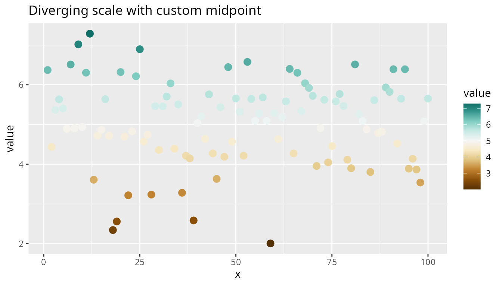
Correlation matrix example
# Correlation matrix
cor_matrix <- cor(mtcars)
cor_df <- as.data.frame(as.table(cor_matrix))
names(cor_df) <- c("Var1", "Var2", "value")
ggplot(cor_df, aes(Var1, Var2, fill = value)) +
geom_tile() +
scale_fill_koloro_div("vik", midpoint = 0) +
theme(axis.text.x = element_text(angle = 45, hjust = 1)) +
labs(title = "Correlation matrix with Vik palette")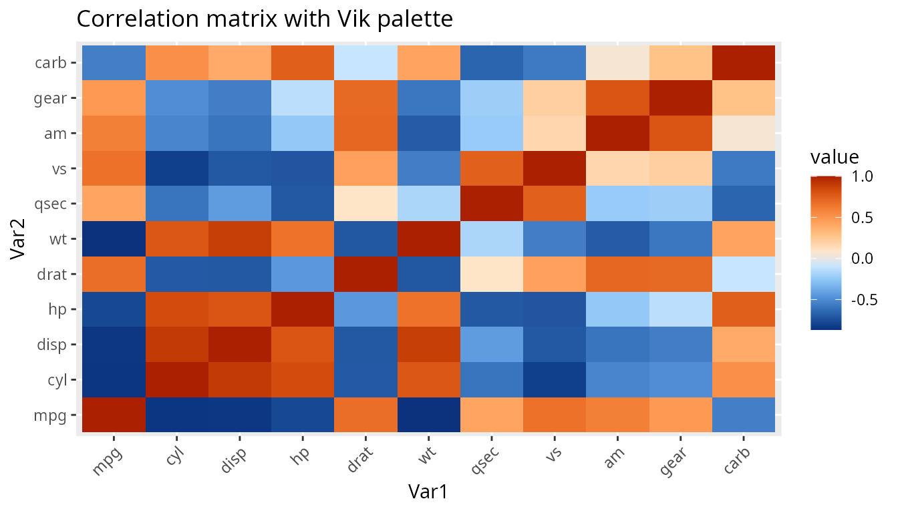
Binned scales
Binned scales create stepped color gradients, useful when you want discrete color breaks in continuous data.
# Binned color scale
ggplot(mtcars, aes(x = wt, y = mpg, color = hp)) +
geom_point(size = 3) +
scale_color_koloro_binned("viridis", n_bins = 6) +
labs(title = "Binned scale (6 bins)")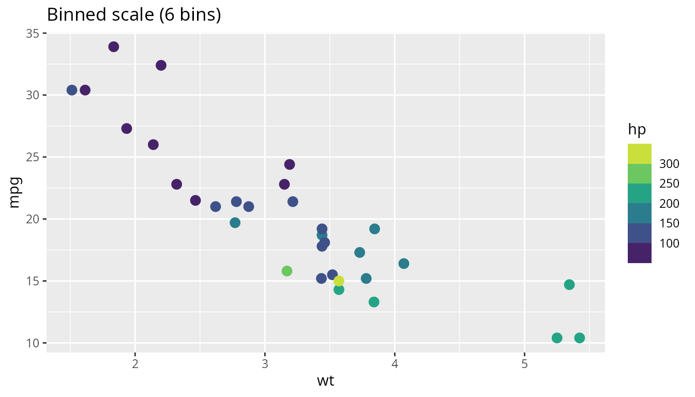
# More bins
ggplot(mtcars, aes(x = wt, y = mpg, color = hp)) +
geom_point(size = 3) +
scale_color_koloro_binned("plasma", n_bins = 10) +
labs(title = "Binned scale (10 bins)")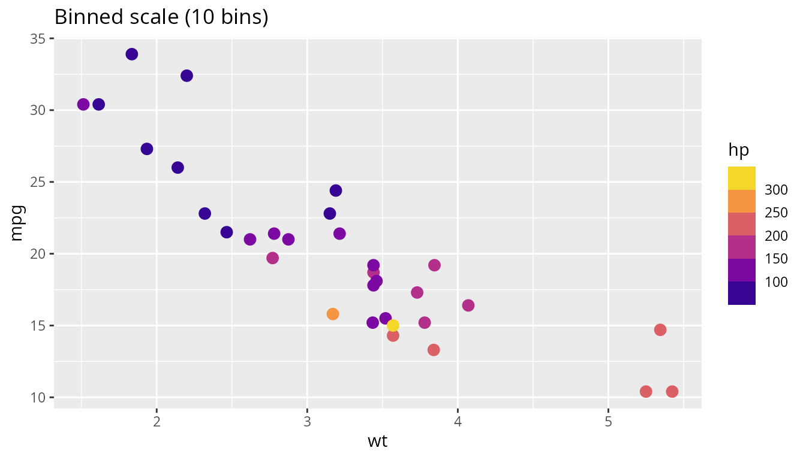
Recommended palettes by plot type
Scatter plots (categorical)
# Recommended: okabe_ito, wong, tol_bright
ggplot(iris, aes(Sepal.Length, Sepal.Width, color = Species)) +
geom_point(size = 3) +
scale_color_koloro("okabe_ito")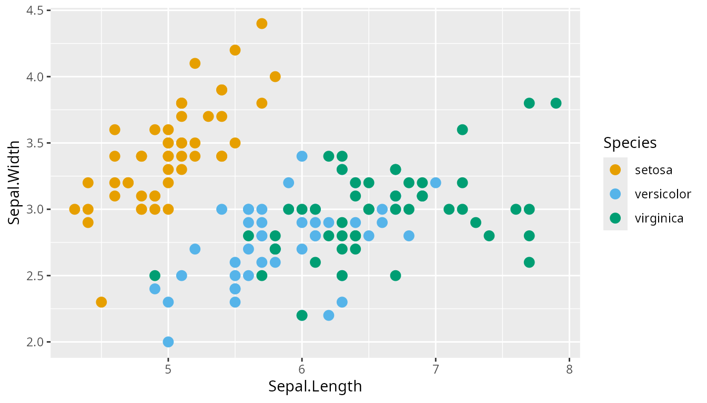
Line charts
# Recommended: tol_bright, tol_muted for many lines
library(tidyr)
economics_long <- economics %>%
pivot_longer(cols = c(pce, pop, psavert, uempmed, unemploy),
names_to = "variable", values_to = "value")
ggplot(economics_long, aes(date, value, color = variable)) +
geom_line() +
scale_color_koloro("tol_muted") +
facet_wrap(~variable, scales = "free_y")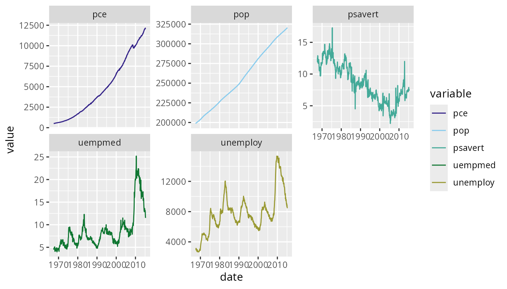
Bar charts
# Recommended: set2_8, tol_light for light backgrounds
ggplot(mpg, aes(class, fill = class)) +
geom_bar() +
scale_fill_koloro("set2_8") +
theme(axis.text.x = element_text(angle = 45, hjust = 1))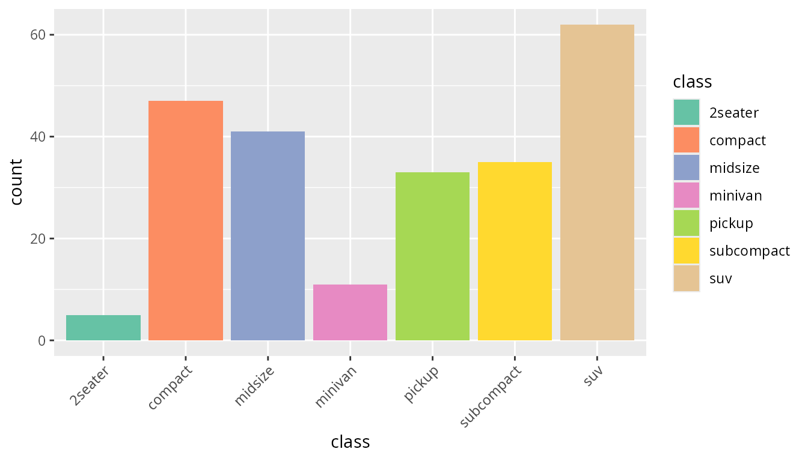
Heatmaps
# Recommended sequential: viridis, magma, batlow
# Recommended diverging: vik, brown_blue_green
ggplot(faithfuld, aes(waiting, eruptions, fill = density)) +
geom_tile() +
scale_fill_koloro_c("magma")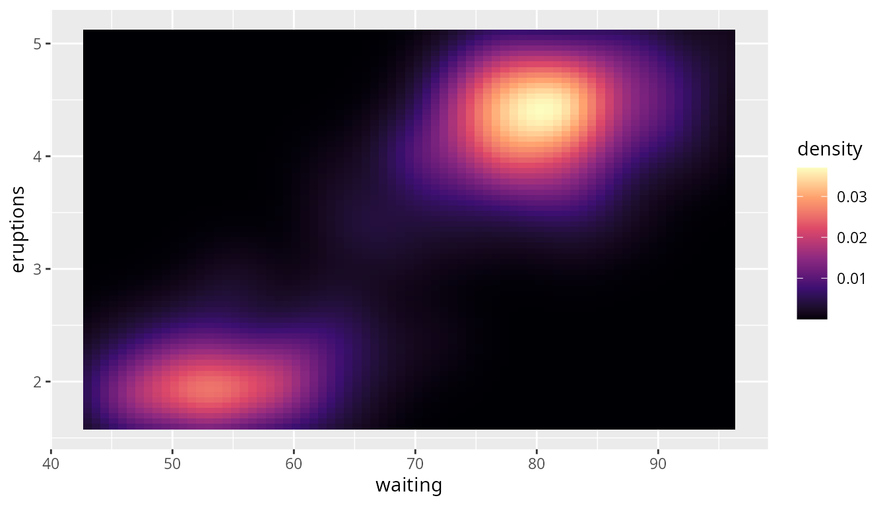
Working with themes
koloRo scales work well with any ggplot2 theme:
p <- ggplot(mtcars, aes(x = wt, y = mpg, color = factor(cyl))) +
geom_point(size = 3) +
scale_color_koloro("tol_bright")
# With different themes
p + theme_minimal() + labs(title = "Minimal theme")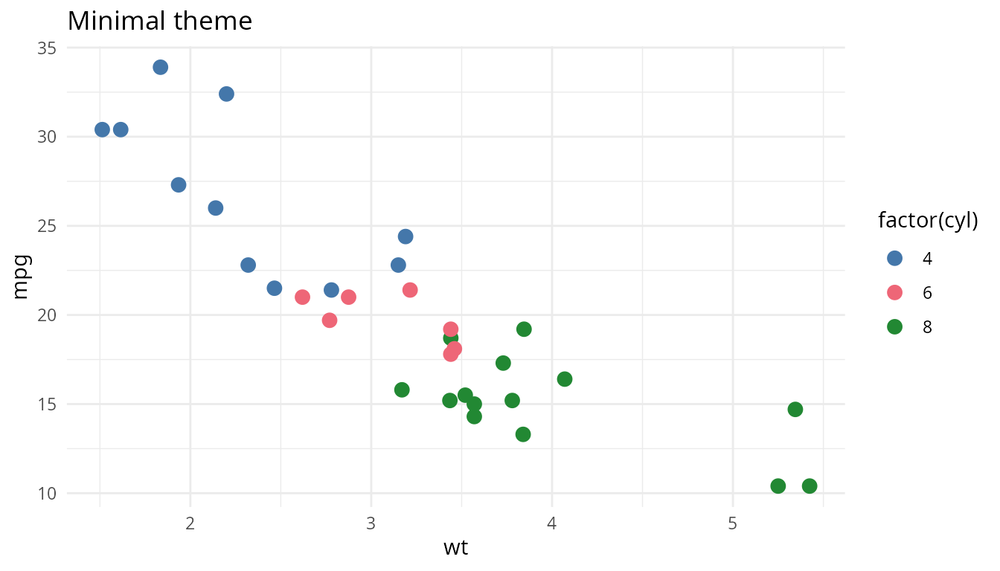
p + theme_classic() + labs(title = "Classic theme")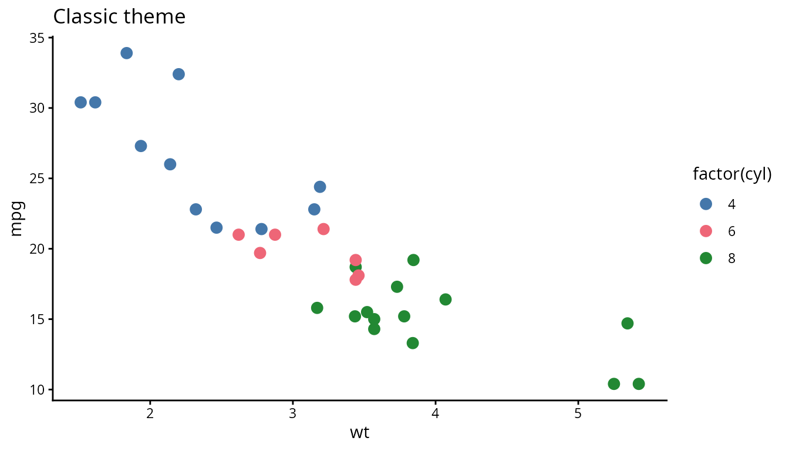
p + theme_dark() + labs(title = "Dark theme")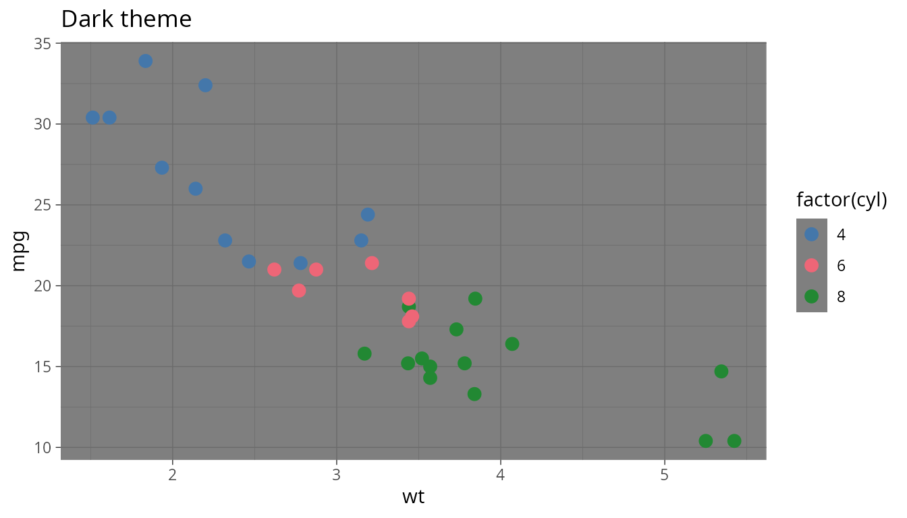
Combining with manual values
You can use koloRo to get colors and then apply them manually:
# Get specific colors from a palette
my_colors <- palettes(palette = "okabe_ito")[1:3]
ggplot(mtcars, aes(x = wt, y = mpg, color = factor(cyl))) +
geom_point(size = 3) +
scale_color_manual(values = my_colors) +
labs(title = "Manual color values from koloRo")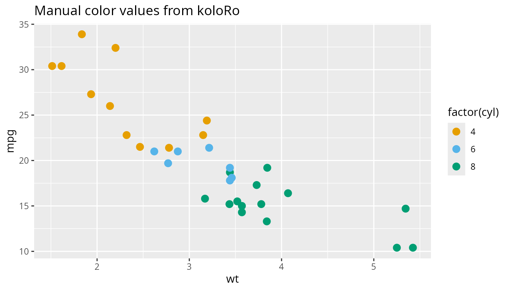
Creating custom palettes
You can also create custom palettes using koloRo’s color manipulation functions:
# Create a custom gradient from two Alhambra colors
base_colors <- palettes(palette = "alhambra_nazari")[c(1, 4)] # Blue and green
custom_gradient <- interpolate_palette(base_colors, n = 5)
ggplot(mtcars, aes(x = factor(cyl), y = mpg, fill = factor(cyl))) +
geom_boxplot() +
scale_fill_manual(values = custom_gradient[c(1, 3, 5)]) +
labs(title = "Custom gradient from Alhambra colors")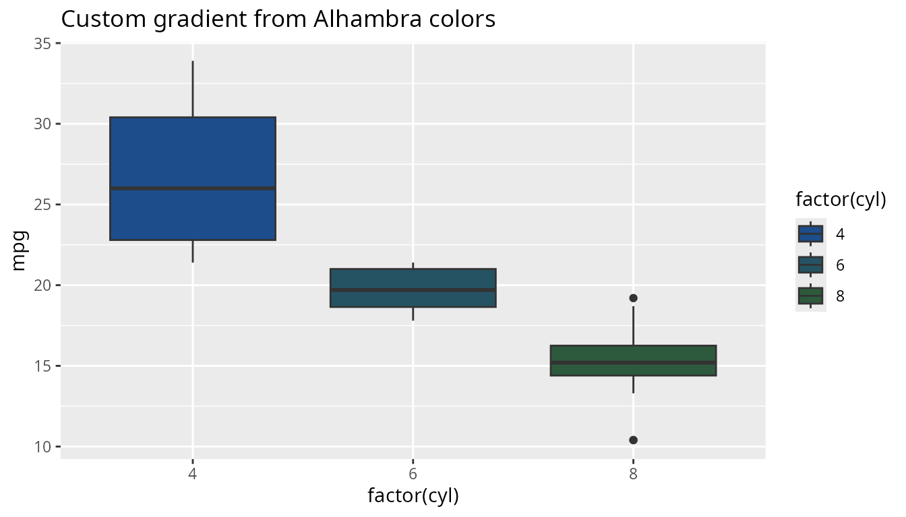
Complete example
library(ggplot2)
# Comprehensive example combining multiple elements
p1 <- ggplot(mtcars, aes(x = wt, y = mpg)) +
geom_point(aes(color = hp, size = disp), alpha = 0.8) +
scale_color_koloro_c("plasma") +
labs(
title = "Vehicle fuel efficiency",
subtitle = "Using koloRo plasma palette",
x = "Weight (1000 lbs)",
y = "Miles per gallon",
color = "Horsepower",
size = "Displacement"
) +
theme_minimal()
print(p1)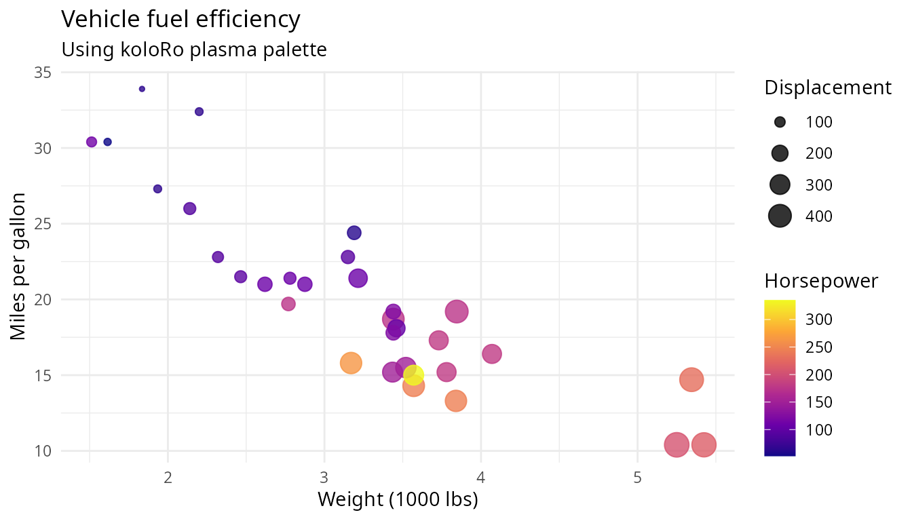
# Faceted plot with categorical colors
p2 <- ggplot(mtcars, aes(x = wt, y = mpg, color = factor(gear))) +
geom_point(size = 3) +
facet_wrap(~cyl, labeller = label_both) +
scale_color_koloro("tol_bright") +
labs(
title = "Fuel efficiency by cylinder count",
color = "Gears"
) +
theme_minimal()
print(p2)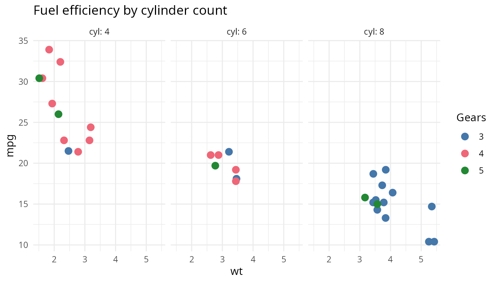
Troubleshooting
Palette has fewer colors than categories
koloRo will automatically recycle colors and issue a warning:
# tol_high_contrast only has 3 colors
# Using it with 4+ categories will recycle
ggplot(mtcars, aes(x = wt, y = mpg, color = factor(gear))) +
geom_point(size = 3) +
scale_color_koloro("tol_high_contrast") # Warning issued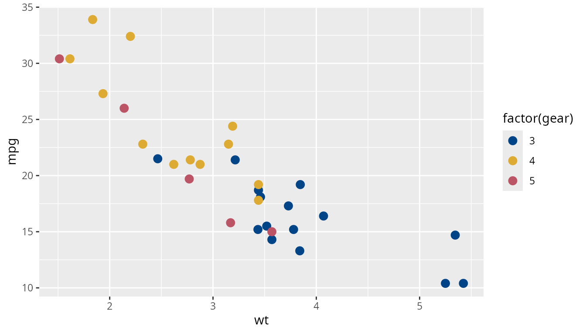
Solution: Use a palette with more colors, like
tol_muted (9 colors) or okabe_ito (8
colors).
Colors don’t appear
Make sure ggplot2 is loaded and you’re using the correct aesthetic:
# color for points/lines
aes(color = variable)
#> Aesthetic mapping:
#> * `colour` -> `variable`
scale_color_koloro()
#> <ggproto object: Class ScaleDiscrete, Scale, gg>
#> aesthetics: colour
#> axis_order: function
#> break_info: function
#> break_positions: function
#> breaks: waiver
#> call: call
#> clone: function
#> dimension: function
#> drop: TRUE
#> expand: waiver
#> fallback_palette: function
#> get_breaks: function
#> get_breaks_minor: function
#> get_labels: function
#> get_limits: function
#> get_transformation: function
#> guide: legend
#> is_discrete: function
#> is_empty: function
#> labels: waiver
#> limits: NULL
#> make_sec_title: function
#> make_title: function
#> map: function
#> map_df: function
#> minor_breaks: waiver
#> n.breaks.cache: NULL
#> na.translate: TRUE
#> na.value: NA
#> name: waiver
#> palette: function
#> palette.cache: NULL
#> position: left
#> range: environment
#> rescale: function
#> reset: function
#> train: function
#> train_df: function
#> transform: function
#> transform_df: function
#> super: <ggproto object: Class ScaleDiscrete, Scale, gg>
# fill for bars/areas
aes(fill = variable)
#> Aesthetic mapping:
#> * `fill` -> `variable`
scale_fill_koloro()
#> <ggproto object: Class ScaleDiscrete, Scale, gg>
#> aesthetics: fill
#> axis_order: function
#> break_info: function
#> break_positions: function
#> breaks: waiver
#> call: call
#> clone: function
#> dimension: function
#> drop: TRUE
#> expand: waiver
#> fallback_palette: function
#> get_breaks: function
#> get_breaks_minor: function
#> get_labels: function
#> get_limits: function
#> get_transformation: function
#> guide: legend
#> is_discrete: function
#> is_empty: function
#> labels: waiver
#> limits: NULL
#> make_sec_title: function
#> make_title: function
#> map: function
#> map_df: function
#> minor_breaks: waiver
#> n.breaks.cache: NULL
#> na.translate: TRUE
#> na.value: NA
#> name: waiver
#> palette: function
#> palette.cache: NULL
#> position: left
#> range: environment
#> rescale: function
#> reset: function
#> train: function
#> train_df: function
#> transform: function
#> transform_df: function
#> super: <ggproto object: Class ScaleDiscrete, Scale, gg>Summary
| Data type | Scale function | Recommended palettes |
|---|---|---|
| Categorical (≤8) | scale_color_koloro() |
okabe_ito, wong, tol_bright |
| Categorical (>8) | scale_color_koloro() |
tol_muted, set2_8, kelly_colors |
| Sequential | scale_color_koloro_c() |
viridis, plasma, batlow |
| Diverging | scale_color_koloro_div() |
vik, brown_blue_green |
| Binned | scale_color_koloro_binned() |
viridis, plasma |
Session info
sessionInfo()
#> R version 4.6.0 (2026-04-24)
#> Platform: x86_64-pc-linux-gnu
#> Running under: Ubuntu 24.04.4 LTS
#>
#> Matrix products: default
#> BLAS: /usr/lib/x86_64-linux-gnu/openblas-pthread/libblas.so.3
#> LAPACK: /usr/lib/x86_64-linux-gnu/openblas-pthread/libopenblasp-r0.3.26.so; LAPACK version 3.12.0
#>
#> locale:
#> [1] LC_CTYPE=es_ES.UTF-8 LC_NUMERIC=C
#> [3] LC_TIME=es_ES.UTF-8 LC_COLLATE=es_ES.UTF-8
#> [5] LC_MONETARY=es_ES.UTF-8 LC_MESSAGES=es_ES.UTF-8
#> [7] LC_PAPER=es_ES.UTF-8 LC_NAME=C
#> [9] LC_ADDRESS=C LC_TELEPHONE=C
#> [11] LC_MEASUREMENT=es_ES.UTF-8 LC_IDENTIFICATION=C
#>
#> time zone: Europe/Madrid
#> tzcode source: system (glibc)
#>
#> attached base packages:
#> [1] stats graphics grDevices utils datasets methods base
#>
#> other attached packages:
#> [1] tidyr_1.3.2 ggplot2_4.0.3 koloRo_0.1.2
#>
#> loaded via a namespace (and not attached):
#> [1] gtable_0.3.6 jsonlite_2.0.0 dplyr_1.2.1 compiler_4.6.0
#> [5] tidyselect_1.2.1 jquerylib_0.1.4 systemfonts_1.3.2 scales_1.4.0
#> [9] textshaping_1.0.5 yaml_2.3.12 fastmap_1.2.0 R6_2.6.1
#> [13] labeling_0.4.3 generics_0.1.4 knitr_1.51 htmlwidgets_1.6.4
#> [17] tibble_3.3.1 desc_1.4.3 bslib_0.10.0 pillar_1.11.1
#> [21] RColorBrewer_1.1-3 rlang_1.2.0 cachem_1.1.0 xfun_0.57
#> [25] fs_2.1.0 sass_0.4.10 S7_0.2.2 otel_0.2.0
#> [29] cli_3.6.6 withr_3.0.2 pkgdown_2.2.0 magrittr_2.0.5
#> [33] digest_0.6.39 grid_4.6.0 rstudioapi_0.18.0 lifecycle_1.0.5
#> [37] vctrs_0.7.3 evaluate_1.0.5 glue_1.8.1 farver_2.1.2
#> [41] ragg_1.5.2 purrr_1.2.2 rmarkdown_2.31 tools_4.6.0
#> [45] pkgconfig_2.0.3 htmltools_0.5.9